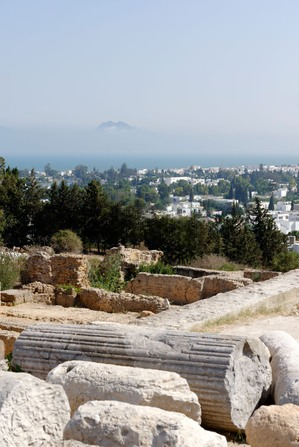
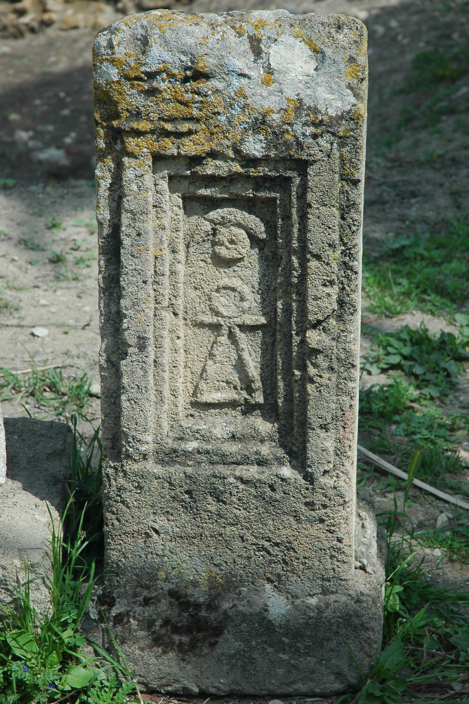
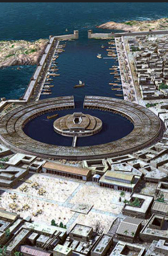
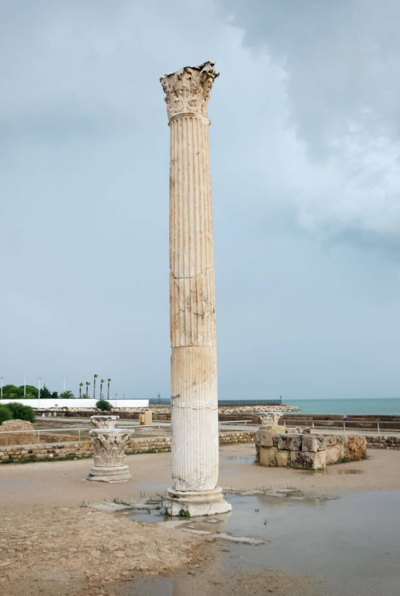
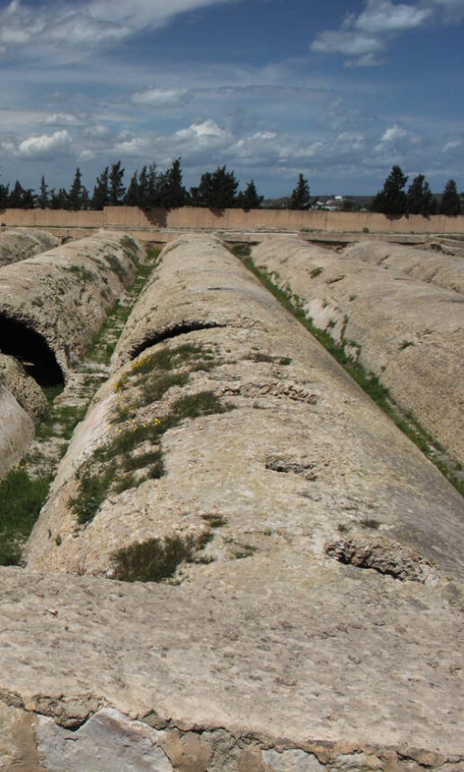
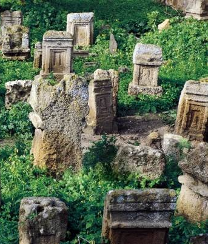
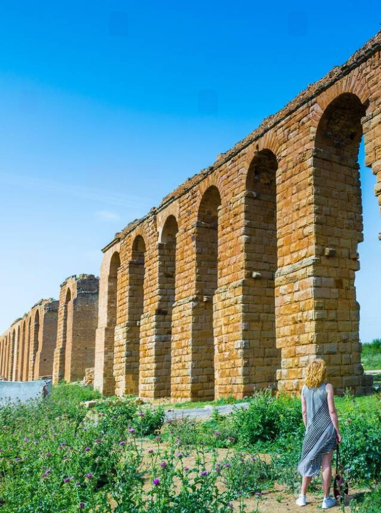

Byrsa Hill
The heart of Carthage, this area served as the city’s citadel. Today, it houses remnants of Punic buildings and the Cathedral of Saint Louis, as well as the Carthage National Museum, which showcases artifacts from the Punic and Roman eras.

Tophet of Carthage
A sacred site thought to have been used for ritual sacrifices and burials during the Punic period. It contains numerous urns and stelae, offering insights into Carthaginian religious practices.

Punic Ports
The remains of the ancient naval and commercial harbors, which were vital to Carthage’s maritime power. These ports demonstrate the city’s strategic and economic prowess.

Antonine Baths
One of the largest Roman bath complexes in Africa, built during the Roman era. This grand structure reflects the Roman transformation of Carthage into a provincial capital.

Roman Amphitheater
A well-preserved amphitheater that hosted gladiatorial games and other public events. It exemplifies Roman influence on the city post-conquest.

Magma Reservoirs
Ancient cisterns that were part of a sophisticated water supply system, ensuring the city's survival during sieges.

Sanctuary of Baal
An ancient religious site dedicated to the deity Baal, reflecting the spiritual life of the Punic people. The site includes altars and inscriptions offering rich historical insights.

Roman Aqueducts
A marvel of ancient engineering, these aqueducts brought water from distant springs to the city of Carthage, showcasing Roman expertise in infrastructure.